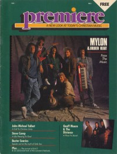

CMnexus
:
Contemporary Christian culture, music, and media.
Magazines
Profiles
Dove Awards
cmnexus.org
CM
nexus
→
Magazine list
→
Premiere
→
Issues
Premiere
1988, vol. 2, iss. 1
< -- Prev
Issue list
Next -- >
Cover

Mylon & Broken Heart
Cover Feature:
Mylon & Broken Heart
Article:
Geoff Moore & the Distance
Steve Camp
Bebe & CeCe Winans
Keith Green
Twila Paris
Whiteheart
Leon Patillo
Steven Curtis Chapman
Petra
< -- Prev
Issue list
Next -- >
CMnexus
(noun)
The magazine index
of modern music
and Christianity
© 2011 CMnexus. Last updated May 2025.
Contact:
Rants and other correspondence to:
editor -AT- cmnexus
-DØT- org
About